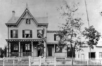
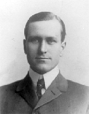
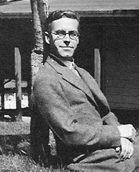
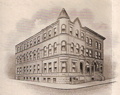

|
Archibald Murray Campbell Archibald Murray Campbell was born in East Street, Warminster, England. |
|
|
Important
Facts
|
||
| Oct. 27, 1843 | Born in East Street, Warminster, England on October 27, 1843, Archibald Murray Campbell was the third of four children of John Campbell and Rachel Frampton. Source: 1870 United States Federal Census Record. | 
Dr. Campbell's home |
| Aug. 3, 1870 | 1870 US Federal Census lists Archibald Campbell (27) Physician, living in West Farms, Westchester, New York. Source: 1870 United States Federal Census Record. | |
| Sep 17, 1873 | Married Mary Louise Cuthell. | |
| Mar 15, 1877 | Mary Louise Cuthell died. | |
| June 10, 1880 | The 1880 US Federal Census lists Archibald Campbell (36), daughter Mary (3), and sister-in-law Emma Cuthell (28). Source: 1870 United States Federal Census Record. | |
| Nov 29, 1880 | Dr. Archibald M. Campbell married Emma Anne Cuthell in New York. |  Murray Archibald Campbell
|
December 1, 1881 |
Murray Archibald Campbell was born in Mt. Vernon, New York. Source: 1900 United States Federal Census Record. | |
| 1889-91 | Dr. Archibald M. Campbell is listed on 20 First Av. Mount Vernon, NY as a physician and surgeon. Source: Ancestry.com. Mt. Vernon, New York Directories, 1889-91. | |
| Feb 1, 1891 | Archibald Bush Campbell was born in Mt. Vernon, New York. Source: 1900 United States Federal Census Record. | |
| June 4, 1900 | Archibald is listed in the 1900 Federal Census as Archibald Campbell (57) along with the rest of his family: his wife Emma A. Campbell (49), and two sons, Murray Campbell (19) and Arch B. Campbell (9), and duaghter Mary Campbell (23). Source: 1900 Census, Mount Vernon Ward 3, Westchester, New York; Roll: T623 1175; Page: 3B; Enumeration District: 85. |  Archibald Bush Campbell
|
| Dec 25, 1902 | The New York Times had an article that was titled: "Bank of Mount Vernon has been sold to a number of business men of this place, among whom are Dr. Archibald M. Campbell. Source: New York Times, Dec. 25, 1902. | |
| Dec. 26, 1902 | Emma Anne Cuthell died in Mount Vernon, NY. She was buried at the Woodlawn Cemetery. Archibald received many letters of sympathy from friends and acquaintances regarding her death. Her obituray said that she died of pneumonia. Source: New York Times, ProQuest Historical Newspapers; and First Methodist Episcopal Church, Mount Vernon, New York. | |
| April 24, 1903 | The Mount Vernon Trust Co. wrote a letter that was addressed to Dr. Arch M. Campbell saying "The employees of the Mount Vernon Trust Company desire to express to their president their sincere sorrow and sympathy for you in this hour of your great bereavement." It was signed by the employees of the bank. Source: The Mount Vernon Trust Co. letter. | |
| June 30, 1911 | Married Ella Seamon Reynolds at the home of the bride, Wyndacre, Greenwich, Conn, by Rev. William H. Owen, Jr. Source: New York Times; Jul 1, 1911; pg. 11. |  Mount Vernon Trust Co
|
| Jan. 16, 1920 | The 1920 US Federal Census listed Archivald Campbell (70), Ella Campbell (56). Source: 1920 US Census, Mount Vernon, Ward 3, Westchester, New York. Source: Letter from Archibald M. Campbell to Mrs. Murray Campbell at 1248 R. Street, Fresno, California and letters from Murray Campbell and father Dr. Archibald M. Campbell. | |
| 1922 | Mr Campbell wrote Jean and Murray a letter saying "Murray's letter has just come to hand in which he tells me of the sad lose which has come to you. How your fondest hopes has been dashed away. It is hard to understand the mystery of life..." | |
| 1923 | In January, Archibald wrote about Murray's recent move to Berkeley and buying a house. Source: Letter from his father Dr. Archibald M. Campbell to Murray Campbell sent to 2302 Carlton St. Berkeley, California. | |
| 1924 | Archibald wrote several letters to his son on Mount Vernon Trust Company stationary. Source: Letters from Archibald M. Campbell. | |
| Jan. 8, 1925 | Mr. Campbell wrote Murray a letter and said that "it is encouraging to learn that physically you are better, and more able to get about, and financially things have cleared up very much". The letter goes on to talk about setting up a trust fund, which would insure Murray a modest living. Source: Letter from Archibald M. Campbell to Murray Campbell at 2302 Carleton St. Berkeley, California. | |
| 1926 | Archibald wrote several letters to his son using the Mount Vernon Trust Company stationary. Source: Letters from Archibald M. Campbell. | |
| 1927 | Archibald wrote several letters to his son on Mount Vernon Trust Company stationary. Source: Letters from Archibald M. Campbell. |
|
| Jan. 11 - June 18, 1928 | Archie wrote several letters to his brother Murray about their father's health. He said "Papa is not as alert as he was a couple of years ago." He also talked about his wife Helen and his daughter Jean. In April, Archie sent a Postal Telegraph to Murray, which said: "Papa has had a slight stroke, is recovering, letter follows." Archie's letter talked about how the stroke affected his right leg and his right hand but their father "He is very cheerful and optimistic and philosophical. He has improved to talk again and to use his hand somewhat." In June Archie wrote two letters to Murray, giving him an update on their father's health and talking about the opening of the new Mt. Vernon Trust Company building. Archie described their father's new office at the bank, the other offices, and the location of the bank vault. Source: Letters from Archibald Bush Campbell to his brother Murray Campbell. |
|
| April 4, 1930 | Archibald M Campbell (86) is listed in the US Federal Cenus as retired and Ella S Campbell (66) as wife. Source: 1930 Federal Census, Mount Vernon, Westchester, New York; Roll: 1662; Page: 4B; Enumeration District: 226; Image: 658. | |
| August 31, 1930 | His father, Archibald Murray Campbell died in Mt. Vernon, New York. The New York Times wrote: "DR. CAMPBELL DEAD IN MT. VERNON HOME. Leading Westchester Physician and Surgeon was 86 years old. Bank president for 21 years. He had been head of county and local medical groups and practiced more than half century." Source: New York Times; Sep 2, 1930; ProQuest Historical Newspapers The New York Times pg. 21. | |
| Sept. 13, 1930 | The New York Times reported that "Mrs. Ella S. Campbell, widow of Dr. Archibald M. Campbell, Mount Vernon physician, who died at his home on Aug. 31, is the principal beneficlary in the will, filed in Surrogate's Court here today." It went on to decribe the bequets made in the will and trust funds that were established for his widow and for a second son, Mrray Campbel of Berkeey, Cal. Source: New York Times; Sep 13, 1930; pg. 22. |